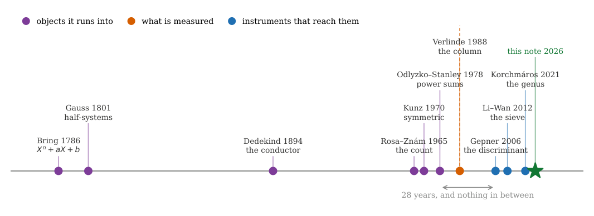
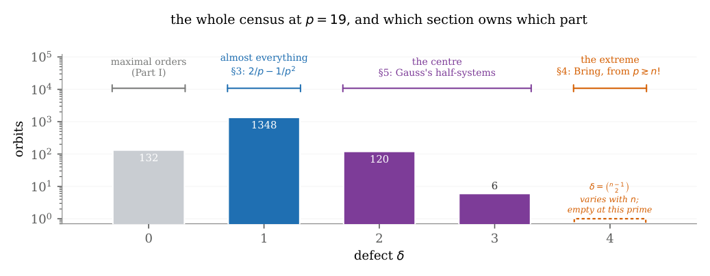
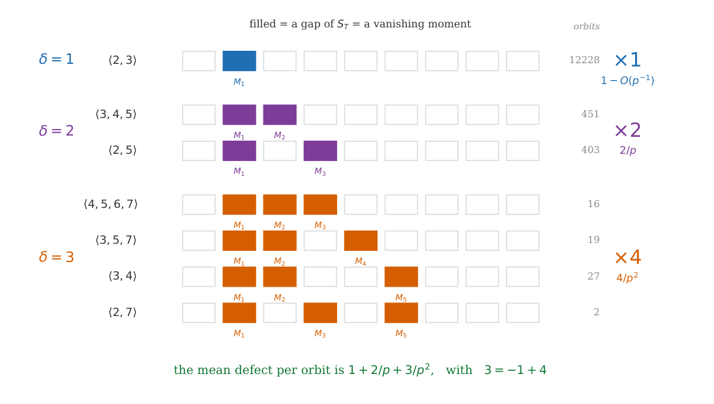
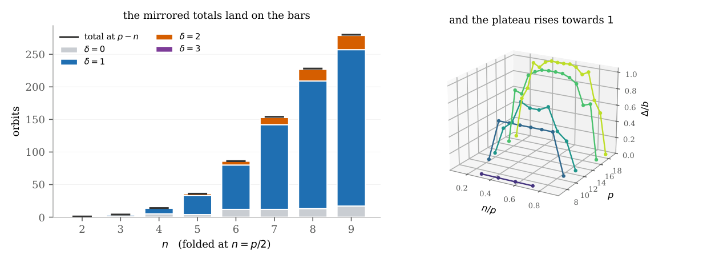
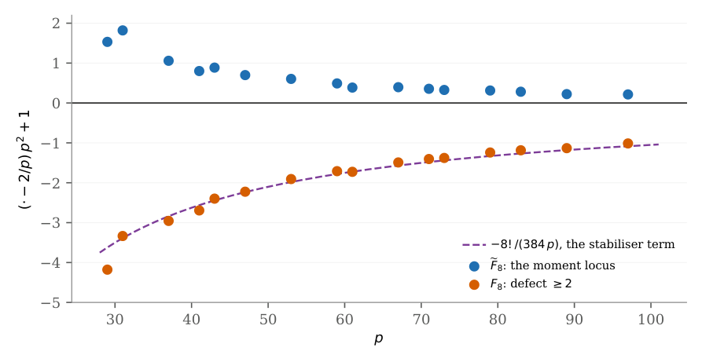
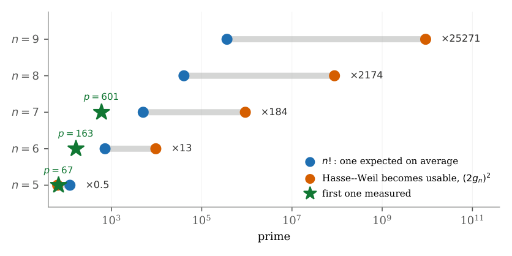

The order generated by a column of the SU(n)ₖ S-matrix is locally a numerical semigroup ring (Part II)
At a glance
What the paper contributes
Part I turned one column of the SU(n)k S-matrix into an order whose defect δ(T) is the number of gaps of a numerical semigroup ST. This note asks how the columns fit together: the p-adic valuation of the discriminant of the fusion ring splits into ramification, defects and a gluing term whose only unknown piece is Δ(n,p) = Σ δ over orbits. That splitting is verified computationally, not proved, as the paper says.
- Small defects by vanishing moments (Proposition 1, Corollary 3, Lemma 4): with trivial stabiliser, δ ≥ 2 ⇔ M2M3 = 0, and δ = 3 happens in exactly four ways, one per numerical semigroup of genus three; δ = 2 never occurs at n = 4. Observation 2 refines this and is measured.
- The distribution law (Theorem 5, Lemma 6, Theorem 8): for fixed n ≥ 5 the proportion of columns with δ ≥ 2 is 2/p − 1/p² up to an explicit error, with no factorial threshold; the mean defect per orbit is 1 + 2/p + 3/p² for n ≥ 7.
- Uniformity in the central range (Theorem 9, proof sketched): both expansions hold for εp ≤ n ≤ (1−ε)p.
- The two ends (Propositions 10–11, §4): totally split trinomials Xn + aX + b at the top (counted at n = 5 by an elliptic curve of conductor 50, measured); Gauss's half-systems in the middle, whose even moments vanish exactly and which give an infinite family of non-Gorenstein orders with semigroup ⟨3,5,7⟩.
🚀 Start here: Corollary 3: with trivial stabiliser, δ ≥ 2 if and only if M₂M₃ = 0.
Main results:
- Lemma 4: δ = 3 in exactly four ways, one per numerical semigroup of genus three
- Theorem 5: the proportion of columns with δ ≥ 2 is 2/p − 1/p² + Oₙ(p^(1−n/2) + p^(1+⌊n/2⌋−n))
- Theorem 8: the mean defect per orbit is 1 + 2/p + 3/p² + Oₙ(p^(−βₙ)) for n ≥ 7
- Proposition 11: for every p ≡ ±1 (mod 8), an explicit half-system gives a non-Gorenstein order with semigroup ⟨3,5,7⟩
🗺️ Map of the results (click a box to go to it)
Dependencies in the written proof: an arrow A → B means that this proof of B uses A. Every result rests on its written proof; the tags record what was checked besides, and each statement's “Evidence & scope” block says how far. The colour of a box is its strongest tag, in the order above; the tags in the box give the rest. Boxes with a thick border are the main results; click a box to read the statement.
📐 Setting (copied from the paper, §1–§3)
(§1) Let \(A_j\) be the order generated by the \(j\)-th Galois orbit of columns, in the étale algebra \(K_j\), and \({\mathcal{O}}_j\) its normalisation. The fusion ring sits in a chain \(R\subseteq \prod _j A_j\subseteq \prod _j{\mathcal{O}}_j\). The last index is the gluing, \(G(n,p):=v_p[\prod _jA_j:R]\). Writing \(\mathcal O\) for an orbit of centred spectra under \({\mathbb {F}}_p^\times \) and \(h_{\mathcal O}\) for its stabiliser order,
(§2) Part I reads the semigroup off the spectrum: with \(h\) the order of the multiplicative stabiliser of \(T\) and \(e=(p-1)/h\) the ramification index, \(S_T\) is generated by \(e\) together with those \(j{\lt}e\) for which \(M_{hj}(T)\ne 0\). The defect \(\delta (T)=\# ({\mathbb {N}}_0\setminus S_T)\) is therefore a function of one thing only: which power sums of \(T\) vanish. (§3) For \(J\subseteq \{ 1,2,3\} \) with \(1\in J\) write \(C_J(n,p)\) for the number of centred \(T\) with \(M_j(T)=0\) for every \(j\in J\). (§5) A subset of \({\mathbb {F}}_p^\times \) containing exactly one of each pair \(\{ a,-a\} \) is a half-system.
Abstract.
Part I described the order generated by a single column of the modular \(S\)-matrix of \({\mathrm{SU}}(n)_k\) at prime height \(p=n+k\). Here we measure how the columns fit together. The \(p\)-adic valuation of the discriminant of the fusion ring splits into ramification, twice the sum of the column defects, and twice a gluing term; the gluing has a closed form by orbits except for \(\Delta (n,p)=\sum _{\text{orbits}}\delta (T)\), and this note gives an asymptotic expansion of that term. The splitting itself is verified computationally and not proved, and what rests on it inherits that status. The defect of a column is a function of one thing only, of which power sums of its spectrum vanish, so the census of \(\Delta \) is a question about vanishing moments. We classify the small defects: for a centred spectrum with trivial stabiliser, \(\delta \ge 2\) is governed by two single vanishing conditions and \(\delta \ge 3\) by exactly four pairs of them, one for each numerical semigroup of genus three. That shape turns into numbers. The proportion of columns with \(\delta \ge 2\) is \(2/p-1/p^{2}+O_n\bigl(p^{1-n/2}+p^{1+\lfloor n/2\rfloor -n}\bigr)\) for each fixed \(n\ge 5\), with no factorial threshold; the mean defect per orbit is \(1+2/p+3/p^{2}+O_n(p^{-\min (3,n/2-1)})\), the coefficient \(3\) being \(-1\) from the first expansion and one unit for each of the four semigroups; and in the central range \(\varepsilon p\le n\le (1-\varepsilon )p\) both hold uniformly, the first with an exponentially small error. Granting the splitting, substituting into it returns an estimate for \(G(n,p)\) itself. Two classical objects turn up at the ends of that distribution. At the top, the columns of maximal defect are the totally split Bring–Jerrard trinomials \(X^n+aX+b\) with \(ab\ne 0\), counted for \(n=5\) by the elliptic curve of conductor \(50\); the Hasse–Weil bound is quadratically miscalibrated there, and the first such column occurs at \(p=67\), \(163\) and \(601\) for \(n=5,6,7\), all below \(n!\). Deep in the distribution, one of the four genus-three families is realised by the half-systems of Gauss’s lemma: we exhibit an infinite family of non-Gorenstein orders whose value semigroup \(\langle 3,5,7\rangle \) does not move with \(p\). Separately, the centred half-systems themselves — all of them, not only those of defect three — are counted by \(H(p)=\bigl(2^{(p-1)/2}+(2\mid p)(p-1)\bigr)/p\), a closed form for a sequence catalogued since 1965 and an exact relabelling of the Fermat quotient of \(2\).
Keywords: modular \(S\)-matrix; \({\mathrm{SU}}(n)_k\); orders generated by character values; numerical semigroups; discriminant; Bring’s curve; Gauss’s half-systems; Fermat quotient.
1 The term without a closed form
🖼️ Figure 1

Everything this note runs into, on one axis, and the dashed line is the object it measures. To the left of it, in purple, the objects: Bring’s trinomial, Gauss’s half-system, Dedekind’s conductor, Rosa and Znám’s count, Kunz’s criterion, Odlyzko and Stanley’s enumeration of power sums. To the right, in blue, the instruments that reach them: Gepner’s discriminant, the Li–Wan sieve, the generalised Bring curve. The split is clean — the last object is from 1978 and the first instrument from 2006, with nothing in between — and it is the point: nothing here was invented for the purpose.
A column of the modular \(S\)-matrix of \({\mathrm{SU}}(n)_k\), normalised by its vacuum entry, lists the eigenvalues of the fusion matrices: the ratios \(S_{\lambda \mu }/S_{0\mu }\) are the fusion characters, and the vacuum column \(S_{\lambda 0}/S_{00}\) is the one that gives the quantum dimensions of the anyons. Since Verlinde [ 4 ] those numbers have been read that way, and they are character values of \({\mathrm{SU}}(n)\) at an element of finite order. It is the normalised columns, for every \(\mu \) and not only for the vacuum, that generate the orders studied here. Part I [ 19 ] turned one column into a ring and showed that, at prime height \(p=n+k\), every property of that ring is a property of a single numerical semigroup \(S_T\) attached to the reduced spectrum \(T\subset {\mathbb {F}}_p\).
That settles each column separately. It says nothing about how the columns sit together, and the invariant that answers such a question is older than the question: the discriminant, and behind it the conductor of an order, which Dedekind [ 3 ] introduced to measure exactly how far an order is from being maximal. Applying it to the whole fusion ring \(R=\mathrm{Fus}({\mathrm{SU}}(n)_k)\) splits its \(p\)-adic valuation into three pieces,
and the first two are already understood: the first is a local computation, and the second is the sum over columns of the defect that Part I identified with the number of gaps of \(S_T\).
The third is the subject of this note, and it is worth saying exactly what it is before using it. Let \(A_j\) be the order generated by the \(j\)-th Galois orbit of columns, in the étale algebra \(K_j\), and \({\mathcal{O}}_j\) its normalisation. The fusion ring sits in a chain
and the discriminant of a chain of orders splits accordingly:
The last index is the gluing, \(G(n,p):=v_p[\prod _jA_j:R]\), and it is the only piece that is not a per-column quantity. Combining (2) with Gepner’s product formula for the discriminant of a WZW fusion ring — the product of the rows of the modular matrix to the power \(-2\) [ 7 ] — and with the per-column ramification and defect of Part I gives a closed form by orbits,
with \(b\) the number of orbits — except for one term.
Measured: (2) and (3) are verified by computing \([\prod _jA_j:R]\) directly, as a lattice index in \({\mathbb {Q}}(\zeta _{np})\) with the Schur values taken by the bialternant, and comparing with the prediction: six cases, \({\mathrm{SU}}(2)_3\), \({\mathrm{SU}}(3)_2\), \({\mathrm{SU}}(3)_4\), \({\mathrm{SU}}(4)_3\), \({\mathrm{SU}}(2)_9\) and \({\mathrm{SU}}(3)_8\), with no discrepancy, and in each of them \(v_p(\operatorname {disc}R)\) from the Gram determinant of the trace form agrees with the Gepner–Vandermonde value. The closed form (3) itself is then checked against \(54\) pairs \((n,p)\) with no exception. This is a measured identity, not a proved one, and everything below that uses it inherits that status.
Everything in (3) is elementary but
and that is the only quantity in the whole decomposition for which we have no closed form.
Three quantities appear in this note that are easy to run together, so we fix them here. Writing \(\mathcal O\) for an orbit of centred spectra under \({\mathbb {F}}_p^\times \) and \(h_{\mathcal O}\) for its stabiliser order,
So \(F_n\) counts spectra, weighted by orbit size; the unweighted proportion of orbits with \(\delta \ge 2\) is a different number, and the mean defect \(\Delta /b\) is a third. The theorem of Section 3 is about the first, and Figure 4 draws the third.
So: what is \(\Delta \)?
The rest of the note is the answer, and it is a chain of four links, each of which asks the next one a question.
The defect of a column is a function of one thing only, of which power sums of its spectrum vanish. Section 2 makes that precise and then asks when the defect is small: the answer is a short classification, and its shape is what everything afterwards uses — the tail \(\delta \ge 2\) is governed by two single vanishing conditions, and the tail \(\delta \ge 3\) by four pairs of them.
Section 3 turns that shape into numbers. Almost every column has defect one; the proportion with \(\delta \ge 2\) is \(2/p-1/p^2\) up to an explicit error, for each fixed \(n\ge 5\) and with no factorial threshold; and, counting the four pairs, the mean defect per orbit is \(1+2/p+3/p^2\). That is an answer to the question this note opened with, because it turns (3) into an estimate for \(G(n,p)\) itself.
A distribution has ends, and the last two sections ask what lives at them. At the top, Section 4: the columns of maximal defect are exactly the totally split trinomials \(X^n+aX+b\) with \(ab\ne 0\) — the Bring–Jerrard normal form to which Bring reduced the general quintic in 1786 [ 1 ] — counted for \(n=5\) by an elliptic curve of conductor \(50\), and that section also contains the one place where the standard tool is badly miscalibrated. Deep in the distribution, Section 5: one of the four families of defect three is realised by the half-systems, the device Gauss built in 1801 [ 2 ] to prove quadratic reciprocity, which give an infinite family of non-Gorenstein orders whose value semigroup does not move with \(p\), and whose count is a combinatorial reading of the Fermat quotient of \(2\).
There is a pattern in that list, and Figure 1 is drawn to show it. Every object this note runs into is older than the thing being measured, and every instrument that reaches it is younger. The modular data are Verlinde’s, from 1988; the objects — Bring’s trinomial, Gauss’s half-system, Dedekind’s conductor, Kunz’s criterion, the count of Rosa and Znám, the enumeration of power sums by Odlyzko and Stanley — are all earlier, the last of them by a decade; and every tool used to measure them, from Gepner’s discriminant to the Li–Wan sieve, is later, the first of them by eighteen years. Nothing here was invented for the purpose. The note lives at that crossing.
Figure 2 is the map. The census has an axis of its own — the defect — and each section of this note owns a stretch of it.
🖼️ Figure 2

The map, drawn on the object rather than tabulated. Every orbit at \(p=19\), placed by its defect: \(\delta =0\) are the maximal orders settled in Part I (\(132\) orbits); \(\delta =1\) is almost everything (\(1348\)) and is governed by the law of §3; the rare \(\delta \ge 2\) (\(120\) and \(6\)) cluster at the centre, and the half-systems of §5 live in the second of those two columns. The last column is drawn detached and dashed on purpose: the maximal stratum of §4 sits at \(\delta =\binom {n-1}{2}\), which is not a single value once \(n\) varies; the comparison with Bring is about \(n\ge 5\), where at this prime that stratum is empty, and not about \(n=3\), where the maximum is \(\delta =1\) and is reached. §2 is what assigns an orbit to a column of this picture at all.
What is proved, what is measured, and what we do not need
Statements marked measured are produced by the scripts that travel with this note, each with its archived output; they are finite verifications, never samples, and the range is always given. The proofs are written out.
One remark about scope is worth making early, because it is what makes the law robust. The law of Section 3 needs only an estimate for the number of subsets with prescribed vanishing moments, of the shape \(\binom pn/p^{|J|}+O(p^{n/2})\), and never an exact formula. So it stands whatever the exact count of those subsets turns out to be — a question with an active literature [ 17 ] that we cite for the reader who wants it, and that the argument here does not lean on.
2 Where the defect comes from
Part I reads the semigroup off the spectrum: with \(h\) the order of the multiplicative stabiliser of \(T\) and \(e=(p-1)/h\) the ramification index, \(S_T\) is generated by \(e\) together with those \(j{\lt}e\) for which \(M_{hj}(T)\ne 0\). The defect \(\delta (T)=\# ({\mathbb {N}}_0\setminus S_T)\) is therefore a function of one thing only: which power sums of \(T\) vanish. Everything in this section is a consequence of that, and \(\Delta (n,p)=\sum _{\text{orbits}}\delta (T)\) inherits it.
Why can the defect not be chosen freely?
Newton’s identities say that the power sums of \(T\) satisfy the linear recurrence whose coefficients are the elementary symmetric functions,
so the vanishing pattern of \((M_k)_k\) is not arbitrary: it is the zero set of a linear recurrence of order \(n\). What that pattern controls is the list of generators of \(S_T\); the semigroup itself is their additive closure, and a gap of \(S_T\) is an index that no sum of generators reaches. The two must not be confused: at \(p=13\) and \(T=\{ 1,2,3,7\} \), which is centred with \(h=1\), one has \(M_6=0\) and yet \(6\in S_T\), because \(2,3\in S_T\). This is what makes \(\delta \) a rigid invariant rather than a tally.
The smallest consequence is already a prohibition. Let \(n=4\) and \(T\) be centred, so \(e_1=0\) and \(M_2=-2e_2\). If \(M_2=0\) then \(e_2=0\), and the recurrence gives \(M_5=-e_2M_3+e_3M_2-e_4M_1=0\): the vanishing of \(M_2\) drags that of \(M_5\). The two cannot be chosen independently, and that alone closes the case.
At \(n=4\) and \(h=1\) the value \(\delta =2\) does not occur.
Lean · ours, in partshow
added to the Lean repository after publication (23-oct-2026): Covers the algebraic content of the n = 4 proposition over any field of char != 2, 3, with h = 1 entering as e_3 != 0; the generating rule of Part I is the definition genSet.
✅ Checked when this page was built: FourMoments.lean compiles with Lean 4.35.0, no errors, no sorry. Axioms — pow4_five_eq_zero, pow4_three_eq, genus_ne_two_of_four: propext, Classical.choice, Quot.sound.
Reproduce: Lean 4.35.0, Mathlib f0b4c8150aa0; in that Lean project, lake env lean FourMoments.lean (SHA-256 of the compiled file: 32919c3df5664506…; a source page on this site may show it with comments edited, under its own hash).
Trust base: 🔒 kernel only — only part of the statement is formal (see the box). Lean: 3 results, standard axioms only
Proof: in this note·Formalized: Lean 4, by the author (public formalizations repository)·Covers: part: added to the Lean repository after publication (23-oct-2026): Covers the algebraic content of the n = 4 proposition over any field of char != 2, 3, with h = 1 entering as e_3 != 0; the generating rule of Part I is the definition genSet.·Cite: Proposition 1, p. 5, doi:10.5281/zenodo.22864267
↳ Not used by another result of the paper.
First, \(h=1\) forces \(e_3\ne 0\): if \(e_3=0\) then the centred quartic \(X^4+e_2X^2-e_3X+e_4\) is even, so its root set is stable under \(t\mapsto -t\) and \(h\ge 2\). Hence \(M_3=3e_3\ne 0\) and \(3\in S_T\). Now if \(M_2\ne 0\) then \(2\in S_T\) too, so \(S_T\supseteq \langle 2,3\rangle \), whose only gap is \(1\), and \(\delta =1\). If \(M_2=0\) then \(e_2=0\), and by the cascade \(M_5=0\) as well; hence \(1,2,5\notin S_T\) and \(\delta \ge 3\). No spectrum is left for \(\delta =2\).
🛡️ Evidence & scope
Program: Newton recurrence, the cascade M₂ = 0 ⇒ M₅ = 0 at n = 4, and zero orbits with n = 4, δ = 2, over 7935 orbits, p ≤ 31, 3 ≤ n ≤ 7. cascada_newton.py
Measured: over the \(560\) orbits of centred spectra with \(n=4\), \(h=1\) and \(p{\lt}60\) — which collect \(24884\) spectra — the implication \(h=1\Rightarrow e_3\ne 0\) and the identity \(M_3=3e_3\) hold with no exception.
Measured: over \(7935\) orbits with \(p\le 31\) and \(3\le n\le 7\): the Newton recurrence holds with no exception, the cascade \(M_2=0\Rightarrow M_5=0\) at \(n=4\) holds with no exception, and the number of orbits with \(n=4\) and \(\delta =2\) is zero, as Proposition 1 requires.
The trichotomy
For orbits with trivial stabiliser the defect is decided by the first two moments that can vanish.
Let \(h=1\). Outside the four loci on which \((M_2,M_3)\), \((M_2,M_4)\), \((M_2,M_5)\) or \((M_3,M_5)\) vanish simultaneously, we find
This is measured, not proved, and everything below that rests on it inherits that status.
🆕 Classical and new: the paper labels it measured, not proved, and says nothing below depends on it.
↳ Not used by another result of the paper.
🛡️ Evidence & scope
Program: 438 orbits with h = 1 outside the loci, p ≤ 19, 3 ≤ n ≤ 7, no exception. tricotomia.py
Measured: on the \(438\) orbits with \(h=1\) lying outside those loci, for \(p\le 19\) and \(3\le n\le 7\), with no exception; one orbit in the range falls on the excluded loci and is accounted for separately.
The form we shall use in Section 3 is a corollary, and it is cleaner than the trichotomy itself because the exceptional loci do not interfere with it.
For \(h=1\), \(\; \delta \ge 2\iff M_2M_3=0\).
Lean · ours, in partshow
added to the Lean repository after publication (21-oct-2026): δ ≥ 2 ↔ M₂M₃ = 0 from the generating rule (moments abstracted to a predicate), and g_i ≤ 2i − 1
✅ Checked when this page was built: GapBound.lean compiles with Lean 4.35.0, no errors, no sorry. Axioms — two_le_genus_iff, gap_le_two_mul_index_sub_one, gap_le_two_mul_genus_sub_one: propext, Classical.choice, Quot.sound.
Reproduce: Lean 4.35.0, Mathlib f0b4c8150aa0; in that Lean project, lake env lean GapBound.lean (SHA-256 of the compiled file: f7f979544891ccc9…; a source page on this site may show it with comments edited, under its own hash).
Trust base: 🔒 kernel only — only part of the statement is formal (see the box). Lean: 3 results, standard axioms only
Proof: in this note·Covers: not formalized·Cite: Observation 2, p. 5, doi:10.5281/zenodo.22864267
↳ Used in: Theorem 5
The corollary does not need the Observation; it follows from the generating rule alone. Since \(T\) is centred, \(M_1=0\), so \(1\notin S_T\). If \(M_2M_3\ne 0\) then \(2,3\in S_T\), hence \(S_T\supseteq \langle 2,3\rangle \), whose only gap is \(1\), and \(\delta =1\). If \(M_2=0\) then \(2\notin S_T\): it is not a generator, and it cannot be a sum of smaller positive elements because the only candidate is \(1\), which is absent. So \(2\) is a second gap and \(\delta \ge 2\). If \(M_3=0\) the same argument applies to \(3\), whose only decomposition by smaller indices would use \(1\).
This is worth stating plainly because it changes the logical shape of the note: Theorem 5 rests on Corollary 3, and Corollary 3 is now proved outright rather than granted from a finite verification. Observation 2 remains as a measured refinement — outside the excluded loci the three cases give \(\langle 2,3\rangle \), \(\langle 3,4,5\rangle \) and \(\langle 2,5\rangle \) respectively — but nothing below depends on it.
And on the four excluded loci?
Outside those four loci the trichotomy decides the defect; on them it does not, and that is where the deep orbits live. Their vanishing patterns do not give one condition, and they do not give two. They give exactly four, and the list is a short consequence of the generating rule rather than of any census — the same comb read twice, once as gaps and once as vanishing moments, which is what Figure 3 draws.
🖼️ Figure 3

The small defects, and where the coefficients come from. One row per numerical semigroup of genus \(\delta \); a filled cell is a gap of \(S_T\), and the same filled cell is the index of a moment that vanishes — the comb is read twice, which is what Lemma 4 says. The cell at \(1\) is filled in every row because \(T\) is centred, so every row starts from the same condition and only the rest distinguishes them. The number of rows in a band is the coefficient of the corresponding term: one semigroup of genus one, two of genus two, four of genus three, giving \(2/p\) and \(4/p^{2}\) and hence \(3=-1+4\) in Theorem 8. The counts on the right are orbits with \(h=1\) measured over \(p\le 29\); all four genus-three rows occur, the rarest twice.
Let \(T\) be centred with \(h=1\) and \(p{\gt}7\). Then \(\delta (T)=3\) if and only if one of
Lean · ours, in partshow
added to the Lean repository after publication (23-oct-2026): numerical semigroups of genus 3: the gap set is {1,2,3}, {1,2,4}, {1,2,5} or {1,3,5}. Not formalized: the translation into the vanishing and non-vanishing of the moments M_i for a centred T with h = 1
✅ Checked when this page was built: GenusThree.lean compiles with Lean 4.35.0, no errors, no sorry. Axioms — gaps_of_genus_eq_three: propext, Classical.choice, Quot.sound.
Reproduce: Lean 4.35.0, Mathlib f0b4c8150aa0; in that Lean project, lake env lean GenusThree.lean (SHA-256 of the compiled file: 73567854f46d0932…; a source page on this site may show it with comments edited, under its own hash).
Trust base: 🔒 kernel only — only part of the statement is formal (see the box). Lean: 1 result, standard axioms only
Proof: in this note·Formalized: Lean 4, by the author (public formalizations repository)·Covers: part: added to the Lean repository after publication (23-oct-2026): numerical semigroups of genus 3: the gap set is {1,2,3}, {1,2,4}, {1,2,5} or {1,3,5}. Not formalized: the translation into the vanishing and non-vanishing of the moments M_i for a centred T with h = 1·Cite: Lemma 4, p. 6, doi:10.5281/zenodo.22864267
🆕 Classical and new: that there are exactly four semigroups of genus three is classical [RG09]; the paper claims the vanishing-moment half of each row.
↳ Used in: Theorem 8
That there are exactly four numerical semigroups of genus three, and that they are the ones listed, is classical and not ours; the count by genus is catalogued [ 6 ] . For completeness: the multiplicity is at most four; if it is four the gaps are \(1,2,3\); if three, the gaps include \(1,2\) and one more, which must be \(4\) or \(5\) because \(\langle 3,4,5\rangle \) contains every integer \(\ge 3\); if two, the gaps are the odd numbers below the smallest odd element, which must then be \(7\). What is ours is the second half of each row. The stated conditions are the generating rule read off each case: a minimal generator below \(e\) comes from a non-vanishing moment and a gap below \(e\) from a vanishing one, and the generators listed already produce every remaining index, so no further moment is constrained.
💡 In plain words (commentary, not part of the paper)
1. For a centred spectrum with trivial stabiliser and \(p{\gt}7\), defect three happens in exactly four ways, one for each numerical semigroup of genus three: \(\langle 4,5,6,7\rangle \), \(\langle 3,5,7\rangle \), \(\langle 3,4\rangle \) and \(\langle 2,7\rangle \). Each way is a pair of vanishing power sums (\(M_2=M_3=0\), \(M_2=M_4=0\), \(M_2=M_5=0\) or \(M_3=M_5=0\)) together with a few that must not vanish. 2. Why: by the generating rule of Part I a minimal generator below \(e\) comes from a nonzero moment and a gap below \(e\) from a vanishing one, so each semigroup of genus three translates into conditions on the moments; the generators of each row already produce every other index, so no further moment is constrained. 3. New and not new, as the paper says: that there are exactly four numerical semigroups of genus three is classical [RG09]; what the paper claims is the second half of each row, the vanishing moments. The consequence it uses later is that \(\delta \ge 3\) (with \(h=1\)) is governed by four pairs of vanishing conditions, and this is where the coefficient \(4\) in Theorem 8 comes from.
🛡️ Evidence & scope
Program: the four rows in both directions over every centred orbit with h = 1: p ≤ 19 all n, p = 23 with 4 ≤ n ≤ 9, p = 29 with 5 ≤ n ≤ 8; no fifth gap set. familias_delta3.py
Program: the ladder of small defects (Figure 3). escalera_defectos.py
Two consequences are worth recording. The first is that
so the tail \(\delta \ge 2\) is governed by two single conditions and the tail \(\delta \ge 3\) by four pairs of them — which is exactly the shape needed in Section 3. The second is that the classical family of Section 5 will realise one of the four rows and not the whole of \(\delta =3\): a distinguished realisation of \(\langle 3,5,7\rangle \), not a classification of the deep orbits.
Measured: the four rows of Lemma 4, as stated with both directions, hold without exception over every centred orbit with \(h=1\) in the ranges \(p\le 19\) for all \(n\), \(p=23\) with \(4\le n\le 9\) and \(p=29\) with \(5\le n\le 8\); all four occur, and no fifth gap set appears. Witnesses outside the trinomial stratum, all of size seven and all with \(h=1\): \(\{ 1,2,3,8,12,15,16\} \) at \(p=19\) gives \(\langle 4,5,6,7\rangle \); and at \(p=29\), \(\{ 1,2,8,12,16,20,28\} \) gives \(\langle 3,5,7\rangle \), \(\{ 1,2,5,8,18,25,28\} \) gives \(\langle 3,4\rangle \) and \(\{ 1,2,6,16,17,19,26\} \) gives \(\langle 2,7\rangle \).
🖼️ Figure 4

Left: the census at \(p=19\) folded at \(n=p/2\). The bars are the orbit counts by defect for \(n\le p/2\); the dashes are the totals at the mirrored index \(p-n\), plotted on top. They land on the bars — all eight pairs, exactly. What the dashes display is the equality of the totals; the stronger statement, that the whole distribution by defect agrees term by term, is the measurement recorded below the figure and is not something the dashes alone can show. Right: the mean defect \(\Delta /b\) against \(n/p\), which is a third quantity again — neither \(F_n\), the proportion of spectra with \(\delta \ge 2\), nor the unweighted proportion of orbits — one ridge per prime, with nothing interpolated between them: each ridge is symmetric, and the plateau rises towards \(1\) as \(p\) grows. The plateau sits at \(n\asymp p/2\), which is outside the reach of Theorem 5; what governs it is Theorem 9, visible here before it is proved. Both from the archived output of nivel_rango.py.
What does level–rank move?
Part I shows that level–rank duality replaces \(T\) by its negated complement, \(T\mapsto -({\mathbb {F}}_p\setminus T)\), and leaves \(S_T\) unchanged. Since \(\delta \) depends only on \(S_T\), the whole census is symmetric under \(n\leftrightarrow p-n\), and in particular
What is worth checking is the stronger statement, that not merely the sum but the entire distribution of \(\delta \) over orbits is carried across; Figure 4 checks that by folding the census in half.
Measured: for every prime \(p\le 19\) and every admissible \(n\) the full distribution of \(\delta \) at \(n\) and at \(p-n\) coincides term by term — \(21\) pairs, no discrepancy.
So the census is symmetric, and its shape is now fixed: two single vanishing conditions for \(\delta \ge 2\) and four pairs of them for \(\delta \ge 3\). The next section turns that shape into numbers.
3 Almost every column has defect one
The top of the census costs a factorial threshold to reach, and Section 4 will pay it. The bulk is cheaper and uniform in \(n\), because it lives in codimension two.
Fix \(n\ge 5\) and let \(F_n(p)\) be the proportion of centred spectra — equivalently, of columns at prime height — with \(\delta \ge 2\).
For every fixed \(n\ge 5\),
and in particular \(F_n(p)=2/p+O_n\! \left(p^{-\min (2,\, n/2-1)}\right)\).
🆕 Classical and new: the sieve over partitions is that of Li and Wan [LW], as in Lai, Marino, Robinson and Wan [LMRW20]; only the estimate is used, never an exact count [GMPP23].
↳ Used in: 7, Theorem 8, Theorem 9
💡 In plain words (commentary, not part of the paper)
1. Almost every column has defect one. For each fixed \(n\ge 5\), the proportion \(F_n(p)\) of centred spectra (equivalently, of columns at prime height) with \(\delta \ge 2\) is \(2/p-1/p^2\) up to an error \(O_n(p^{1-n/2}+p^{1+\lfloor n/2\rfloor -n})\); for \(n\ge 7\) that error is \(o(p^{-2})\), so the coefficient \(-1\) is identified as a theorem. No factorial threshold in \(n\) is needed. 2. Why, in four steps: there are exactly \(\binom pn/p\) centred spectra (translation has no fixed points); the number \(C_J\) of centred sets with prescribed vanishing moments is \(\binom pn/p^{|J|}+O_n(p^{n/2})\) by additive characters, a sieve over partitions and Weil’s bound (Lemma 6); by Corollary 3, with trivial stabiliser \(\delta \ge 2\) means \(M_2M_3=0\), counted by inclusion–exclusion as \(C_{\{ 1,2\} }+C_{\{ 1,3\} }-C_{\{ 1,2,3\} }\); and the spectra with a nontrivial stabiliser are only \(O_n(p^{\lfloor n/2\rfloor })\). 3. The paper says plainly that the coefficient \(-1\) is not visible numerically in the computed range (\(n=8\), \(p\le 97\)): a stabiliser correction of about \(-8!/(384\, p)\) is still of size one there. Only the estimate of \(C_J\) is used, never an exact count (Remark 7). The sieve over partitions is that of Li and Wan, as in Lai, Marino, Robinson and Wan.
🛡️ Evidence & scope
Program: the four steps of the proof, each against the census (Step 3 exact for 5 ≤ n ≤ 8, p ≤ 43). ley_2p.py
Numerical illustration (not a proof): the three-moment census at n = 8 up to p = 97: the coefficient −1 is not yet visible, as the paper says. ley_2p_largo.py, ley_2p_estabilizadores.py
The proof is four steps, and each is elementary once the trichotomy of Section 2 is in hand. We record them separately because three of the four are exact statements and only one is an estimate; it is worth seeing where the error enters.
Step 1: there are exactly \(\binom pn/p\) centred spectra. The translations \(t\mapsto t+c\) act on the \(n\)-subsets of \({\mathbb {F}}_p\), and for \(n{\lt}p\) no orbit has a fixed point, so every orbit has exactly \(p\) elements and exactly one representative of vanishing sum. Measured: the identity \(\# \{ M_1=0\} =\binom pn/p\) holds with no exception over the whole range computed.
Step 2: the only estimate. For \(J\subseteq \{ 1,2,3\} \) with \(1\in J\) write \(C_J(n,p)\) for the number of centred \(T\) with \(M_j(T)=0\) for every \(j\in J\). Additive orthogonality turns each condition into a character sum; the sieve over partitions introduces cycle multipliers below \(p\); and each non-trivial frequency carries a polynomial of degree at most three, so Weil’s bound applies to every term (see Li and Wan [ 15 ] ; for the same sieve applied to prescribed moments, Lai, Marino, Robinson and Wan [ 16 ] ). The outcome is
Counting the subsets of \({\mathbb {F}}_p\) by their power sums is an old question: Odlyzko and Stanley [ 5 ] gave a closed form for the number of subsets of \({\mathbb {F}}_p^\times \) with a single prescribed power sum, of unrestricted size, and showed that it departs from its average by an exponentially small relative amount. What is needed here is different in both respects — the size is fixed at \(n\) and several moments are prescribed at once — but the shape of the answer is the same.
The implied constant can be made explicit, and it is worth doing because the dependence on \(n\) is exactly what the \(O_n\) hides — and because the degree of the largest moment enters it, which is what decides how far the estimate reaches.
Let \(n{\lt}p\), let \(J\) be a set of positive integers with \(1\in J\) and \(d=\max J{\lt}p\), and let \(C_J(n,p)\) be the number of \(n\)-subsets of \({\mathbb {F}}_p\) with \(M_j=0\) for every \(j\in J\). Then
↳ Used in: Theorem 5, Theorem 8, Theorem 9
Expand the \(|J|\) conditions by additive characters. A frequency \((a_j)_{j\in J}\) contributes the sum of \(e_p\bigl(\sum _{t\in T}f(t)\bigr)\) over \(n\)-subsets \(T\), with phase polynomial \(f(X)=\sum _{j\in J}a_jX^j\). The zero frequency gives \(\binom pn/p^{|J|}\) exactly. On a non-zero frequency \(f\) is non-constant of degree at most \(d\), so each character sum over \({\mathbb {F}}_p\) is at most \((d-1)\sqrt p\) by Weil. Expanding the \(n\)-subsets by cycle type contributes one such factor per cycle, and the identity \(\sum _{\sigma \in S_n}x^{c(\sigma )}=x(x+1)\cdots (x+n-1)\) sums those contributions over \(S_n\); dividing by \(n!\) and summing the \(p^{|J|}-1\) non-zero frequencies gives the stated bound.
🛡️ Evidence & scope
Program: the bound holds in all 48 cases of the three-moment census, n = 8, 29 ≤ p ≤ 97 (ratio bound/error 57 to 2.4·10⁵). cota_CJ.py
For \(J\subseteq \{ 1,2,3\} \) this is \(2\sqrt p\) and recovers (4); the proof of Theorem 9 needs it up to \(d=11\), which is why the degree is carried through the statement rather than fixed in it.
Measured: (5) holds in all \(48\) cases of the three-moment census, \(n=8\) and \(29\le p\le 97\). It is a worst-case bound and not an estimate, and the measurement says so plainly: the ratio of bound to measured error runs from \(57\) to \(2.4\cdot 10^5\), with median \(1.6\cdot 10^3\). We use it for what it is good for — making the dependence on \(n\) checkable, and distinguishing a bound from an envelope fitted to the data — and not to predict the size of anything.
Measured: the implied constant is small and stable: for \(n=8\) the error of \(C_{\{ 1,3\} }\) is \(2.5\cdot 10^{-4}p^4\), \(4.6\cdot 10^{-4}p^4\) and \(4.4\cdot 10^{-4}p^4\) at \(p=11,29,43\). The bound (4) is correct and generous.
Step 3: inclusion–exclusion, exactly. By Corollary 3, a spectrum with trivial stabiliser has \(\delta \ge 2\) if and only if \(M_2M_3=0\). Hence
Measured: an exact identity against the census, with no exception, for \(5\le n\le 8\) and all \(p\le 43\).
Step 4: the stabilisers are negligible. The criterion of Step 3 assumes a trivial stabiliser. A centred spectrum with \(h{\gt}1\) is a union of multiplicative orbits of size at least two, possibly together with \(0\); such sets are automatically centred, since the sum of a subgroup of \({\mathbb {F}}_p^\times \) of order at least two vanishes. Counting them gives \(O_n(p^{\lfloor n/2\rfloor })\), dominated by the unions of \(\pm \) pairs. Measured: by brute force, the ratio to \(p^{\lfloor n/2\rfloor }\) is stable — about \(0.10\) for \(n=5\) and about \(0.01\) for \(n=6,7\) — over \(11\le p\le 19\).
Dividing Steps 2–4 by Step 1 and collecting proves Theorem 5: the two main terms \(\binom pn/p^2\) contribute \(2/p\), the triple intersection contributes \(-1/p^2\), and the two error sources contribute \(p^{1-n/2}\) and \(p^{1+\lfloor n/2\rfloor -n}\).
🖼️ Figure 5

The two quantities at \(n=8\) over the sixteen primes \(29\le p\le 97\) — one more than the table above, which starts at \(31\) — plotted as \((\cdot -2/p)p^2+1\), which should tend to zero if the coefficient \(-1\) is visible. Blue is the moment locus \(\widetilde F_8\), orange is \(F_8\) itself, and the dashed curve is not a fit but the stabiliser term \(-8!/(384\, p)\) computed from the classification of the spectra with \(h{\gt}1\). The two series approach zero from opposite sides, and neither is close to it at \(p=97\): the dashed curve says why, and it is of size one over the whole range. The earlier version of this figure drew the blue points alone and labelled them \(F_8\).
Can the next coefficient be seen?
For \(n\ge 7\) the error of Theorem 5 is \(o(p^{-2})\), so the coefficient \(-1\) is identified as a theorem. Numerically it is not, and we say so plainly. Two independent \(O(p^{-1})\) contributions sit on top of it in the range we can compute: the sieve error, of order \(n!\, C\, p^{3-n/2}\), which for \(n=8\) is \(O(p^{-1})\); and the stabiliser correction, which we now know exactly and which is \(\approx -8!/(384\, p)\), of size one at \(p=97\). Either alone is the size of the term being sought. Reaching a range where the coefficient becomes visible would need \(n\ge 9\), or a census far beyond the \(O(np^4)\) cost of the three-moment computation used here. Figure 5 shows both series and the correction that separates them; what it does not show is convergence to zero, and we do not claim it.
Two quantities have to be kept apart here. Write \(\widetilde F_n(p)\) for the proportion of centred spectra lying in the moment locus \(M_2M_3=0\), which is what the sieve counts directly. By Corollary 3, \(\widetilde F_n=F_n\) on the spectra with \(h=1\) and there only; the spectra with \(h{\gt}1\) sit inside the locus — \(h\) even forces every odd moment to vanish, so \(M_3=0\) — while almost none of them has \(\delta \ge 2\). Step 4 is exactly the bookkeeping of that difference, and it must be carried into any table.
At \(n=8\) the correction is enumerable in closed form rather than estimated. A centred spectrum of size \(8\) with \(h{\gt}1\) is a union of four antipodal pairs, or, when \(7\mid p-1\), a coset of the subgroup of order \(7\) together with \(0\); there is no other case. The second kind never contributes: such a \(T\) has \(h=7\) and \(M_7=7a^7\ne 0\), so the reindexed rule puts the generator \(1\) in \(S_T\) and \(\delta =0\). Every exceptional spectrum that does reach \(\delta \ge 2\) is therefore of the first kind, and the numerator of \(F_8\) is
with \(D=\binom pn/p\) and \(J_8(p)\) the number of unions of four antipodal pairs with \(\delta \ge 2\).
Measured: at \(n=8\) and \(p=31\) the locus holds \(16\, 635\) centred spectra, of which \(1365\) have \(h{\gt}1\) — exactly \(\binom {15}{4}\) — and \(J_8(31)=0\), so the numerator of \(F_8(31)\) is \(15\, 270\). The first prime of the range with \(J_8\ne 0\) is \(p=71\), where \(J_8=35\): all \(35\) are unions of four antipodal pairs, the \(10\) cosets of the subgroup of order \(7\) contribute nothing, and \(T=\{ 1,3,7,15,56,64,68,70\} \) is one of them, with \(h=2\), \(S_T=\langle 3,4\rangle \) and \(\delta =3\). The table below gives both quantities at every prime computed.
|
\(p\) |
31 |
37 |
41 |
43 |
47 |
53 |
59 |
61 |
67 |
71 |
73 |
79 |
83 |
89 |
97 |
|
\(\bigl(\widetilde F_8-2/p\bigr)p^2+1\) |
1.82 |
1.06 |
0.80 |
0.89 |
0.70 |
0.60 |
0.49 |
0.39 |
0.40 |
0.36 |
0.33 |
0.31 |
0.28 |
0.22 |
0.22 |
|
\(\bigl(F_8-2/p\bigr)p^2+1\) |
\(-3.33\) |
\(-2.96\) |
\(-2.69\) |
\(-2.40\) |
\(-2.22\) |
\(-1.91\) |
\(-1.71\) |
\(-1.73\) |
\(-1.49\) |
\(-1.40\) |
\(-1.38\) |
\(-1.24\) |
\(-1.19\) |
\(-1.13\) |
\(-1.01\) |
The honest reading of the second row is that the coefficient \(-1\) is not visible in this range. The correction contributes a term of order \(\binom {(p-1)/2}{4}\big/\binom pn p^{-1}\cdot p^2 \approx -8!/(384\, p)\), about \(-105/p\), which at \(p=97\) is still of size one — the size of the term one is trying to see. The theorem is untouched, since that is comfortably inside its stated error; what fails is the numerical claim, and it fails for both rows, from opposite sides.
Neither row falls monotonically: the first reverses at \(p=43\) and \(p=67\), the second at \(p=61\). That is what an error term carrying arithmetic should do, and it is the reason nothing here is claimed from a pair of consecutive primes. Measured: multiplied by \(p\), the first row runs from \(56.4\) at \(p=31\) to \(20.9\) at \(p=97\) — and the second row from \(-103\) to \(-98\), which is the constant \(-105\) predicted above and not a decay.
🆕 Classical and new: the paper: «it is unaffected by however the exact count of those subsets is settled [GMPP23]».
↳ Not used by another result of the paper.
From a tail probability back to \(\Delta \)
The note opened by asking for \(\Delta (n,p)\) and has so far answered with a tail probability. Lemma 4 closes that gap, because it says that \(\delta \ge 3\) is governed by four pairs of vanishing conditions where \(\delta \ge 2\) was governed by two single ones. Two ingredients come first.
The first bounds the higher tails. If \(g_i\) is the \(i\)-th gap of a numerical semigroup then \(g_i\le 2i-1\): the map \(s\mapsto g_i-s\) injects the semigroup elements of \([0,g_i]\) into the gaps of that interval, and there are \(g_i+1-i\) of the former and \(i\) of the latter. Hence \(\delta \ge r\) forces at least \(r-1\) of \(M_2,\dots ,M_{2r-1}\) to vanish, and a union bound over the \(\binom {2r-2}{r-1}\) possible systems together with Lemma 6 at \(d=2r-1\) gives, for \(n\) and \(r\) fixed,
It is a bound and not an equivalence: a vanishing moment need not be a gap.
The second is that passing from spectra to orbits costs nothing at this order. Outside the exceptional set every orbit has exactly \(p-1\) elements, and the exceptional proportion is \(O_n(p^{1+\lfloor n/2\rfloor -n})\) by Step 4, which is \(O_n(p^{-3})\) once \(n\ge 7\).
For every fixed \(n\ge 7\), with \(\beta _n=\min (3,n/2-1)\),
and in the uniform measure on centred spectra \(\mathbb P(\delta =3)=4/p^{2}+O_n(p^{-\beta _n})\).
↳ Used in: Theorem 9
The inclusion–exclusion is over the four loci \(L_{ab}=\{ M_a=M_b=0\} \) with \(ab\in \{ 23,24,25,35\} \), not over the four rows of Lemma 4: the rows carry non-vanishing conditions as well and describe four different semigroups, so as events they are disjoint and there is nothing to include or exclude. It is the loci that overlap, and by the consequence recorded after that lemma their union is exactly \(\{ h=1,\ \delta \ge 3\} \). Note that lying in \(L_{ab}\) is weaker than realising the corresponding semigroup: further moments may vanish and the defect may be larger.
Each locus imposes two vanishing conditions beyond \(M_1=0\), so each has probability \(p^{-2}+O_n(p^{1-n/2})\) by Lemma 6 with \(d\le 5\). Any two of them together impose at least three — the six pairwise unions are \(\{ 2,3,4\} \), \(\{ 2,4,5\} \), \(\{ 2,3,4,5\} \) and \(\{ 2,3,5\} \) three times — so each intersection is \(O_n(p^{-3}+p^{1-n/2})\), where the second term must be kept: at \(n=7\) it is \(p^{-5/2}\), which is larger than \(p^{-3}\). Inclusion–exclusion gives \(\mathbb P(\delta \ge 3)=4p^{-2}+O_n(p^{-\beta _n})\), and (7) with \(r=4\) gives \(\mathbb P(\delta \ge 4)=O_n(p^{-3}+p^{1-n/2})\). Since \(T\) is centred, \(1\notin S_T\) whenever \(h=1\), so \(\delta =0\) forces \(h{\gt}1\) and \(\mathbb P(\delta =0)=O_n(p^{-3})\) for \(n\ge 7\). Now
the last sum being at most \(\binom {n-1}{2}\mathbb P(\delta \ge 4)\). Substituting Theorem 5 for the second term and the above for the third gives \(1+2/p+(-1+4)/p^{2}\), and the change of measure adds nothing at this order.
💡 In plain words (commentary, not part of the paper)
1. The mean defect per orbit is \(1+2/p+3/p^2\) up to \(O_n(p^{-\beta _n})\), \(\beta _n=\min (3,n/2-1)\), for every fixed \(n\ge 7\); and in the uniform measure on centred spectra, \(\mathbb P(\delta =3)=4/p^2\) up to the same error. Since \(\Delta (n,p)\) is the one term of the gluing formula without a closed form, this gives (granting the measured splitting of the discriminant) an estimate for the gluing \(G(n,p)\) itself. 2. Why: write the mean as \(1-\mathbb P(\delta =0)+\mathbb P(\delta \ge 2)+\mathbb P(\delta \ge 3)+\sum _{r\ge 4}\mathbb P(\delta \ge r)\). Theorem 5 gives \(\mathbb P(\delta \ge 2)=2/p-1/p^2+\dots \). By Lemma 4 the event \(\delta \ge 3\) (with \(h=1\)) is the union of four loci, each two vanishing moments beyond \(M_1\); each has probability \(p^{-2}\) up to error (Lemma 6) and their pairwise intersections impose at least three conditions, so inclusion–exclusion gives \(4/p^2\). The higher tails are bounded through the gap bound \(g_i\le 2i-1\). 3. So the coefficient \(3\) is \(-1+4\): the \(-1\) of Theorem 5 and one unit for each row of Lemma 4. The paper says the computed range (\(p\le 19\), \(n\le 8\)) is nowhere near the asymptotic regime and neither confirms nor contradicts the theorem, which rests on its proof.
🛡️ Evidence & scope
Numerical illustration (not a proof): at p ≤ 19, n ≤ 8 the ratio Δ/b is still between 0.50 and 1.01: the computed range neither confirms nor contradicts the theorem, which rests on its proof. censo_delta.py
So the coefficient \(3\) is \(-1+4\): the \(-1\) of Theorem 5, and one unit for each row of Lemma 4. Granting (3), this returns an estimate for the quantity the note set out to understand,
Measured: and here the computation cannot help, which we say rather than dress up. At \(p\le 19\) and \(n\le 8\) the ratio \(\Delta /b\) still runs between \(0.50\) and \(1.01\), where the expansion predicts about \(1.11\); the term \(3/p^{2}\) is then about \(0.008\), two orders below the distance to the limit. The computed range is nowhere near the asymptotic regime, and it neither confirms Theorem 8 nor contradicts it. The theorem rests on its proof.
A central regime, where the uniformity is real
Theorem 5 is for fixed \(n\), and the plateau of Figure 4 lives at \(n\asymp p/2\), so the theorem does not govern it. Level–rank makes that plain: \(n=p-2\) pairs with \(n=2\), where the centred spectra are opposite pairs of defect zero, and no law of the form \(F_n\sim 2/p\) can hold there. A genuine uniformity does hold away from both ends, and it follows from the same bound.
Fix \(0{\lt}\varepsilon {\lt}1/2\). There is \(c_\varepsilon {\gt}0\) such that, uniformly for \(\varepsilon p\le n\le (1-\varepsilon )p\),
🆕 Classical and new: the paper gives the proof as a sketch and says so.
↳ Not used by another result of the paper.
Sketch. With \(x=(d-1)\sqrt p\) and \(L=\lceil x\rceil \), the right side of Lemma 6 is at most \(\binom {n+L-1}{L-1}\le (n+L)^{L-1}=\exp \bigl(O_d(\sqrt p\log p)\bigr)\), while \(\binom pn\ge e^{pH(n/p)}/(p+1)\ge e^{pH(\varepsilon )}/(p+1)\), \(H\) the binary entropy, because \(n\) is a mode of the corresponding binomial. The relative error is therefore exponentially small, uniformly in the strip, for any fixed \(d\); we use \(d\le 11\). For the stabilisers, a spectrum fixed by an element of order \(h{\gt}1\) is a union of \(h\)-cosets, so with \(n=hr\) their number is \(A=\binom {(p-1)/h}{r}\) and \(A^h\le \binom {p-1}{n}\), whence \(A\le \binom pn^{1/2}\); summing over \(h\) leaves an exponentially small proportion. A fixed spectrum may also carry \(0\), so the case \(n=hr+1\) has to be counted as well; there \(A^h\le \binom {p-1}{n-1}\) and the same estimate applies.
The two expansions then follow as in Theorems 5 and 8, with one change that is not cosmetic. For fixed \(n\) the higher tails were absorbed by \(\sum _{r\ge 4}\mathbb P(\delta \ge r)\le L_n\, \mathbb P(\delta \ge 4)\) with \(L_n=\binom {n-1}{2}\) constant. Here \(n\asymp p\), so \(L_n\asymp p^{2}\) and that step would give only \(O(p^{-1})\). Instead keep the first two terms separate:
By (7) with \(d\le 7,9,11\) the three terms are \(O_\varepsilon (p^{-3})\), \(O_\varepsilon (p^{-4})\) and \(O_\varepsilon (p^{-5})\) up to exponentially small errors, so the sum is \(p^{-3}+p^{-4}+O(p^{2})p^{-5}=O_\varepsilon (p^{-3})\). This is what forces the moment of degree eleven: without the third term the factor \(L_n\) would have to multiply \(\mathbb P(\delta \ge 4)\).
Finally the change of measure. Since \(h\le n\), every exceptional orbit has at least \((p-1)/n\) elements, which bounds their proportion among orbits and not merely among sets; in the strip the extra factors \(n\) and \(\delta \le \binom {n-1}{2}\) are absorbed by the exponentially small error.
Excluding the two ends is essential, not a technicality. What the theorem buys is the right to speak of the plateau of Figure 4 as a statement rather than as a picture — and it does not turn the primes \(p\le 19\) into evidence that the asymptotic regime has been reached.
So what is at the ends of that distribution?
The law says that almost every column has defect one and that the mean is \(1+2/p+3/p^2\). A distribution described that way invites one more question, and the last two sections answer it: what sits at the top of the census, and what sits at the bottom of the small-defect classification. Neither answer was designed by us. The first is a curve Bring wrote down in 1786; the second is the device Gauss built in 1801 to prove quadratic reciprocity.
4 The extreme: Bring’s quintics
Part I [ 19 ] bounds the defect of a centred spectrum by \(\delta (T)\le \binom {n-1}{2}\), with equality exactly when the monic polynomial with root set \(T\) is a trinomial \(X^n+aX+b\) with \(ab\ne 0\). That last condition is not decoration: it is what rules out the spectra whose polynomial is \(X^n+b\) or which contain \(0\), and those are precisely the ones with a non-trivial stabiliser. In the language of moments the trinomial condition says \(M_1(T)=\dots =M_{n-2}(T)=0\): the extreme stratum of the census is cut out by the vanishing of the first \(n-2\) power sums, together with \(ab\ne 0\).
Measured: at \(n=4\) and every prime \(p\le 47\) the equivalence holds as stated, in both directions; dropping \(ab\ne 0\) breaks it at eight of those primes, and every counterexample is a coset of a multiplicative subgroup or contains \(0\) — for instance \(T=\{ 1,5,8,12\} \) at \(p=13\), whose polynomial is \(X^4+12\), and \(T=\{ 0,1,3,9\} \) at the same prime. That locus is a classical object. For \(n=5\) the condition \(M_1=M_2=M_3=0\) in \(\mathbb {P}^4\) defines Bring’s curve, the genus-\(4\) Riemann surface with automorphism group \(S_5\); and the normal form \(X^5+aX+b\) is precisely the Bring–Jerrard form to which Bring reduced the general quintic in 1786 [ 1 ] . The coincidence is not one: it is the same equation seen twice.
What is that locus?
Write \(C_n\subset \mathbb {P}^{n-1}\) for the locus \(M_1=\dots =M_{n-2}=0\). After the linear equation \(M_1=0\) it is the complete intersection of the hypersurfaces of degrees \(2,3,\dots ,n-2\) in \(\mathbb {P}^{n-2}\), so it is a curve, and adjunction gives its genus at once:
For \(n=5\) this returns \(g_5=4\), Bring’s curve. This is not new: \(C_n\) is the generalisation of Bring’s curve studied by Korchmáros, Lia and Timpanella [ 13 ] , who prove that it is absolutely irreducible and non-singular — in characteristic zero, and in characteristic \(p\ge 7\) under the hypothesis \(n\le p-1\), which holds throughout this note since \(T\subset {\mathbb {F}}_p\) has \(n\) distinct elements — of degree \((n-2)!\) and with tame automorphism group \(S_n\), and who give the genus in the equivalent form \(\tfrac 14\bigl((n-2)(n-3)-4\bigr)(n-2)!+1\). We use (9) only as a size.
How many extreme columns are there?
For \(n=5\) the count is exact and elliptic. The Jacobian of Bring’s curve is isogenous over \({\mathbb {Q}}\) to \(E^4\) for the elliptic curve of conductor \(50\) in the isogeny class 50a — the one attached to the model in \(\mathbb {P}^4\), which Braden and Disney-Hogg [ 14 ] distinguish from a second model related to 50b — whence \(\# C_5({\mathbb {F}}_p)=p+1-4a_p(E)\). So that the identity can be reproduced without ambiguity we fix the two auxiliary objects explicitly:
with \(\varepsilon _R(p)=1\) exactly when \(R\) splits completely over \({\mathbb {F}}_p\). Passing from points to columns costs only the fixed points of the \(S_5\)-action, and the resulting identity is
where \(N_{\mathrm{tri}}(p)\) is the number of orbits of totally split trinomials with \(ab\ne 0\) and the three boundary terms are the contributions of the points with non-trivial stabiliser.
Measured: (10) holds with no exception for the \(51\) primes \(7\le p\le 251\), with the two sides computed independently — the left by counting split trinomials, the right by counting \(E\) point by point. The first prime at which \(N_{\mathrm{tri}}\) is non-zero is \(p=67\); from there on it is non-zero at most primes of the range, so the identity has content over nearly all of it and not only near the top.
The curve \(E\) has \(j=-25/2\) and therefore no complex multiplication, so the fluctuation of \(N_{\mathrm{tri}}(p)\) about \(p/120\) should follow the semicircle law.
Measured: Over the \(427\) primes below \(3000\): no violation of Hasse; the moments of \(a_p/2\sqrt p\) agree with Sato–Tate up to \(k=8\) with a largest deviation of \(0.0097\), attained at \(k=1\); and a six-box histogram of the angle deviates from \((2/\pi )\sin ^2\) by at most \(0.014\).
🖼️ Figure 6

One bar per \(n\), on a logarithmic scale: the bar is the gap. Its left end is \(n!\), where the expected number of columns of maximal defect first reaches one; its right end is \((2g_n)^2\), the prime from which the Hasse–Weil bound carries any information; the ratio is printed beside it. The stars are measured first appearances — \(p=67\), \(163\) and \(601\) for \(n=5,6,7\) — and all three sit left of \(n!\), by a margin that widens with \(n\). That is the point of the figure: neither end of the bar predicts the star, but the right end misses it by a factor that grows quadratically while the left end misses it by a factor that stays small. At \(n=5\) the two ends are inverted, which is why the geometry works there and nowhere above.
Does this work for every \(n\)?
It is tempting to read (10) as a template for every \(n\). It is not, and the reason is worth stating precisely, because the two thresholds involved differ by far more than the bookkeeping suggests.
The number of extreme columns is governed by the density \(1/n!\) of a trivial Frobenius in \(S_n\): the signal is \(p/n!\), so a single column of maximal defect can only be expected once
The Hasse–Weil error on the same count is \(2g_n\sqrt p/n!\), so the bound carries information only when \(\sqrt p{\gt}2g_n\), that is when \(p{\gt}(2g_n)^2\). Comparing the two:
|
\(n\) |
\(g_n\) |
\((2g_n)^2\) |
\(n!\) |
\((2g_n)^2/n!\) |
|
5 |
4 |
64 |
120 |
0.5 |
|
6 |
49 |
9 604 |
720 |
13.3 |
|
7 |
481 |
925 444 |
5 040 |
183.6 |
|
8 |
4 681 |
87 647 044 |
40 320 |
2 173.8 |
Colour: blue shade = the number’s size within its column.
At \(n=5\) the bound is comfortable, \(64{\lt}120\), which is why the geometry works there. At \(n=6\) it already asks for thirteen times \(n!\), and the ratio grows factorially after that. Figure 6 draws the two thresholds as the gap between them, which is what the table is really measuring. The gap is the usual one between a worst case and a typical size: the bound uses \(|t|\le 2g\sqrt p\), whereas \(t\) is a sum of \(g\) pairs of eigenvalues whose typical size is far smaller. We do not claim square-root cancellation here — that would need control of the correlations between those pairs — only that the bound is a worst case and is being compared against a mean.
Two things should be kept apart. The ratio \(p/n!\) is an expected count. It says when one such column exists on average; it does not predict the smallest prime that carries one, because as \(p\) ranges over primes there are many independent chances and the first success arrives well before the mean reaches one. So (11) is a statement about scale, not a prediction, and the right way to test it is exhaustive search.
Measured: by exhaustive enumeration of all pairs \((a,b)\) with \(ab\ne 0\), sweeping primes upward from \(p=n+1\), the first prime carrying a totally split trinomial is
All three fall below \(n!\), and the ratio decreases with \(n\), as more primes become available before the mean reaches one. The Hasse–Weil threshold, by contrast, overshoots the measured first appearance by factors of \(1\), \(59\) and \(1540\) respectively, and quadratically in the limit.
Part I already records the witness at the first of these, the quintic \(X^5+2X+27\) over \({\mathbb {F}}_{67}\) with \(\delta =6\).
What survives for general \(n\) is therefore not this section but Section 3: the distribution of \(\delta \) lives in codimension two and is accessible for every \(n\) without any factorial threshold. This section describes a stratum that is exact where it exists and empty for small \(p\). The scale at which it appears grows with \(n\), but \(n!\) is where its expected size reaches one, not a threshold below which it is empty: the three measured first appearances all lie below \(n!\). That is a different kind of statement from the law, and worth keeping apart.
5 The centre: Gauss’s half-systems
Section 4 found a classical object at the top of the census. The natural question is whether that was luck. It was not; but the second object does not sit at the other end, and saying where it does sit is half the content of this section. It sits inside one of the four families of Lemma 4, and it is classical too — later than Bring by fifteen years, not older.
Which of the four rows does a natural family realise?
By Theorem 5 the orbits with \(\delta \ge 3\) are already unusual, and by Lemma 4 there are exactly four ways for one to occur. They cluster in the middle range of \(n\), which is exactly the part of the census that earlier work never reached, and the question here is which of the four rows a natural family realises.
One family inside the row \(M_2=M_4=0\) has a name, and it is older than everything else in this note. It does not exhaust that row — the row is a condition on two moments, and the witness \(\{ 1,2,8,12,16,20,28\} \) at \(p=29\) recorded above lies in it without being one. A subset of \({\mathbb {F}}_p^\times \) containing exactly one of each pair \(\{ a,-a\} \) is a half-system: the device Gauss introduced in the Disquisitiones [ 2 ] to prove quadratic reciprocity. The size \(m=(p-1)/2\) does not have to be assumed: it is forced.
Let \(T\subseteq {\mathbb {F}}_p^\times \) satisfy \(M_r(T)=0\) for every even \(r\) with \(2\le r\le p-3\). Then \(T\) is empty, a half-system, or all of \({\mathbb {F}}_p^\times \). Conversely every half-system has those moments zero. In particular a non-empty proper \(T\) with those moments zero has \(|T|=(p-1)/2\): the size is forced, not assumed.
Lean · oursshow
✅ Checked when this page was built: HalfSystems.lean compiles with Lean 4.35.0, no errors, no sorry. Axioms — trichotomy, moments_of_halfSystem: propext, Classical.choice, Quot.sound.
Reproduce: Lean 4.35.0, Mathlib f0b4c8150aa0; in that Lean project, lake env lean HalfSystems.lean (SHA-256 of the compiled file: 4e1ccb742e1cffc1…; a source page on this site may show it with comments edited, under its own hash).
Trust base: 🔒 kernel only. Lean: 2 results, standard axioms only
Proof: in this note·Covers: not formalized·Cite: Theorem 5, p. 8, doi:10.5281/zenodo.22864267
🆕 Classical and new: the paper has not found the statement anywhere, under five vocabularies, and attributes it to nobody.
↳ Used in: Proposition 11
For a quadratic residue \(q\) put \(w(q)=\# \{ t\in T: t^2=q\} \in \{ 0,1,2\} \). For \(r=2k\) the hypothesis reads \(\sum _q w(q)q^k=0\) for \(1\le k{\lt}(p-1)/2\). The full Vandermonde matrix on the distinct values \(q\), with rows \(k=0,\dots ,m-1\), is invertible, so the rows \(k=1,\dots ,m-1\) have a kernel of dimension exactly one; and the constant vector lies in it, because \(\sum _{q\in \mathrm{QR}}q^k=0\) for \(1\le k{\lt}m\). Hence all \(w(q)\) are equal, to \(0\), \(1\) or \(2\): \(T\) is empty, meets each pair \(\{ a,-a\} \) once, or is all of \({\mathbb {F}}_p^\times \). If \(0\in T\) the same argument applies to \(T\setminus \{ 0\} \), which adds the half-systems with \(0\) adjoined, of size \((p+1)/2\).
Conversely, if \(T\) is a half-system then squaring is injective on \(T\) and \(T^2\) runs over the quadratic residues exactly once, so for \(r=2k\) with \(1\le k{\lt}m\) one has \(M_{2k}(T)=\sum _{s\in \mathrm{QR}}s^{k}=0\).
🛡️ Evidence & scope
Program: no non-half-system with those moments over every orbit with p ≤ 19; the converse over 2924 half-systems. semisistemas.py
The bound \(r\le p-3\) is not cosmetic: at \(r=p-1\) every non-zero element contributes \(1\) and \(M_{p-1}(T)=|T|\ne 0\). We have not found the statement anywhere, under any of five different vocabularies, and attribute it to nobody. 1
Measured: over every orbit with \(p\le 19\) there is no set whose even moments all vanish in the range \(2\le r\le p-3\) and which fails to be a half-system, with \(0\) adjoined or not.
Measured: over \(2924\) half-systems, the implication holds with no exception.
What is their semigroup?
The generating rule of Part I reads the generators off the moments \(M_{hj}\), not off \(M_j\), so the index has to be handled before the formula is written. Here it settles itself: if \(M_3M_5M_7\ne 0\) then \(h\) divides \(3\), \(5\) and \(7\), hence \(h=1\) and \(e=p-1\), and only then does \(M_{hj}\) become \(M_j\). With \(h=1\) in force, Proposition 10 says a half-system has no even generator below \(e\), so \(S_T=\langle e\rangle +\langle j \text{ odd}: M_j\ne 0\rangle \), and whenever \(M_3M_5M_7\ne 0\) — the generic case, and the only one we call on —
independently of \(p\), with gaps \(\{ 1,2,4\} \); and \(\langle 3,5,7\rangle \) is not symmetric, so by Kunz’s criterion [ 8 ] the order is not Gorenstein. One family, one semigroup — but not at every prime, and the hypothesis \(M_3M_5M_7\ne 0\) is what fails.
Measured: at \(p=11\) there are exactly two centred half-systems, \(\{ 1,3,4,5,9\} \) and its negative, and both have \(h=5\) and \(\delta =0\): they are maximal orders. So no half-system realises \(\langle 3,5,7\rangle \) at that prime. What is true is that the family is infinite, and Proposition 11 below exhibits a member for every prime \(p\equiv \pm 1\pmod8\).
Calling the case generic is not the same as exhibiting it, so we exhibit it. The following construction produces, for every admissible prime, one half-system with \(S_T=\langle 3,5,7\rangle \) written down explicitly.
Let \(p{\gt}7\) be a prime with \((2\mid p)=1\) and let \(m=(p-1)/2\). There is exactly one \(k\in \{ 0,\dots ,m\} \) with \(8k(k+1)+1\equiv 0\pmod p\), and for it the set
is a centred half-system with trivial stabiliser and \(S_{T_k}=\langle 3,5,7\rangle \), hence \(\delta (T_k)=3\) and the order is not Gorenstein.
Lean · ours, in partshow
added to the Lean repository after publication (23-oct-2026): Covers the moment computation of the family proposition for a given k with 8k(k+1)+1=0 and p>7; existence of k, centring and the semigroup <3,5,7> are not formalized.
✅ Checked when this page was built: FamilyMoments.lean compiles with Lean 4.35.0, no errors, no sorry. Axioms — moments_Tk, moment_Tk_odd: propext, Classical.choice, Quot.sound.
Reproduce: Lean 4.35.0, Mathlib f0b4c8150aa0; in that Lean project, lake env lean FamilyMoments.lean (SHA-256 of the compiled file: bde3c56ef9d894d7…; a source page on this site may show it with comments edited, under its own hash).
Trust base: 🔒 kernel only — only part of the statement is formal (see the box). Lean: 2 results, standard axioms only
Proof: in this note·Formalized: Lean 4, by the author (public formalizations repository)·Covers: part: added to the Lean repository after publication (23-oct-2026): Covers the moment computation of the family proposition for a given k with 8k(k+1)+1=0 and p>7; existence of k, centring and the semigroup <3,5,7> are not formalized.·Cite: Proposition 11, p. 16, doi:10.5281/zenodo.22864267
🆕 Classical and new: infinite explicit non-Gorenstein families are cheap (Marseglia [Mar22]); the paper claims only that this one is natural and its semigroup does not move with p.
↳ Not used by another result of the paper.
The congruence is \((2k+1)^2\equiv \tfrac 12\), which has two roots in \({\mathbb {F}}_p\) because \((2\mid p)=1\); they are \(k\) and \(p-1-k\), one on each side of \(m\), and neither equals \(m\), so exactly one lies in \(\{ 0,\dots ,m\} \). By construction \(T_k\) contains one of each pair \(\{ t,-t\} \), so it is a half-system and every even moment vanishes by Proposition 10. For the odd ones put \(u=k(k+1)\) and \(v=m(m+1)\), so that \(u\equiv -\tfrac 18\) and \(v\equiv -\tfrac 14\) in \({\mathbb {F}}_p\). Writing \(F_j(t)=\sum _{r\le t}r^j\), one has \(M_j(T_k)=2F_j(k)-F_j(m)\) for odd \(j\), and the classical closed forms \(F_3=\tfrac {[t(t+1)]^2}{4}\), \(F_5=\tfrac {[t(t+1)]^2(2t(t+1)-1)}{12}\) and \(F_7=\tfrac {[t(t+1)]^2(3[t(t+1)]^2-4t(t+1)+2)}{24}\) give, after substituting \(u\) and \(v\),
all non-zero for \(p{\gt}7\). The same two variables give the centring, which does not follow from the three moments above: \(F_1(t)=t(t+1)/2\), so
So \(T_k\) is centred, and \(M_3M_5M_7\ne 0\) forces \(h=1\); the displayed semigroup then follows from the previous paragraph.
💡 In plain words (commentary, not part of the paper)
1. For every prime \(p{\gt}7\) with \(p\equiv \pm 1\pmod8\) there is an explicit spectrum, \(T_k=\{ 1,\dots ,k\} \cup \{ -(k+1),\dots ,-m\} \) with \(m=(p-1)/2\) and \(k\) the unique solution in \(\{ 0,\dots ,m\} \) of \(8k(k+1)+1\equiv 0\), whose order has value semigroup \(\langle 3,5,7\rangle \): defect three, gaps \(\{ 1,2,4\} \), and not Gorenstein. The semigroup does not move with \(p\). 2. Why: \(T_k\) takes one element from each pair \(\{ t,-t\} \), so it is one of Gauss’s half-systems and all its even moments vanish (Proposition 10). The odd ones come from Faulhaber’s closed forms for \(\sum r^3,\sum r^5,\sum r^7\) and \(\sum r\), with \(k(k+1)\equiv -1/8\) and \(m(m+1)\equiv -1/4\): \(M_1=0\) (the set is centred) and \(M_3=-1/128\), \(M_5=7/1536\), \(M_7=-245/49152\), all nonzero for \(p{\gt}7\), which forces a trivial stabiliser. The generating rule then gives \(\langle 3,5,7\rangle \), which is not symmetric, so Kunz’s criterion says the order is not Gorenstein. 3. What the paper claims and what it does not: infinite explicit families of non-Gorenstein orders are cheap (Marseglia); the point here is that this family is natural, generated by character values, and its semigroup is constant. It covers the primes \(p\equiv \pm 1\pmod8\), half of them by density, not all.
🛡️ Evidence & scope
Program: the 19 admissible primes p ≤ 200: half-system, M₁ = 0, h = 1, the three constants, gaps 1,2,4. familia_Tk.py
Measured: for the \(19\) admissible primes \(p\le 200\): \(T_k\) is a half-system, \(M_1=0\), \(h=1\), the three moments equal the constants above in \({\mathbb {F}}_p\), and \(S_{T_k}\) has gaps \(\{ 1,2,4\} \) — no exception. The scope is worth stating: \((2\mid p)=1\) means \(p\equiv \pm 1\pmod8\), so the construction covers half the primes by density, which is enough for an infinite family and is not all of them.
It would be easy to overstate this. Infinite explicit families of non-Gorenstein orders are cheap: for any prime \(\ell \) the order \({\mathbb {Z}}+\ell {\mathcal{O}}_K\) has type \(\dim _{\mathbb {Q}}K-1\), as Marseglia observes [ 12 ] . What is not cheap is that this family is natural — it is generated by character values, not manufactured — and that its value semigroup does not move with \(p\).
The same object also sits at the opposite end of the census. When \(p\equiv 3\pmod4\) the set of quadratic residues is itself a centred half-system, and its order is maximal, \(\delta =0\). Gauss’s device supplies both the deepest orders and some of the maximal ones, according to a congruence.
How many are there?
Let \(H(p)\) be the number of centred half-systems, counted as sets and not as orbits — by Proposition 10, the sets of size \((p-1)/2\) with vanishing sum whose even moments all vanish. Expanding \(H=\frac1p\sum _{a}\prod _{t}(\zeta ^{at}+\zeta ^{-at})\), the term \(a=0\) contributes \(2^{(p-1)/2}\) and each \(a\ne 0\) contributes the Legendre symbol \((2\mid p)\) — by Gauss’s lemma, which is what the half-system was built for in the first place. Hence
Measured: (12) holds for every prime \(p\le 199\), with no exception.
Two warnings about what this quantity is and is not, because both are easy to misread. It counts sets, not orbits: at \(p=31\) there are \(1058\) centred half-systems but only \(39\) multiplicative orbits. And it does not count the family of the previous paragraph: the value semigroup \(\langle 3,5,7\rangle \) requires \(M_3M_5M_7\ne 0\), which most but not all half-systems satisfy.
Measured: at \(p=31\) the \(1058\) centred half-systems split as \(990\) with \(\delta =3\), \(30\) with \(\delta =5\) and \(38\) with \(\delta =0\); the last are the maximal ones of the paragraph above. So (12) is an upper bound for the size of the \(\langle 3,5,7\rangle \) family, not its count.
Is it new? No, and the sequence is older than it looks
Here the story turns, and it is worth telling because the turn was ours.
The count is not new. Rosa and Znám [ 9 ] introduced in 1965 the sets “of type \((\ast )\)” — sum \(\equiv 0\), no pair \(\{ x,-x\} \) — and proved that with \(n\) elements they are exactly the zero-sum half-systems modulo \(m=2n+1\). Their \(Q(n)\) is our \(H(p)\). The sequence sits in the OEIS [ 10 ] twice: as A002703, which goes back to Sloane’s Handbook of 1973, and as A262568, which is A002703 shifted by two and was entered in 2015. Their formulas are by partitions, valid for every \(n\), with no primality and no Legendre symbol.
Measured: the \(36\) terms of the OEIS b-file run over the odd moduli \(m=7,\dots ,77\), of which only \(18\) are prime; (12) is a statement about prime modulus and so speaks to those \(18\) alone, and it matches them exactly. What reproduces all \(36\) terms is the closed form for arbitrary odd modulus,
which specialises to (12) when \(m\) is prime; it reproduces the b-file term by term with no discrepancy. The index of the OEIS is \(n=(m-1)/2\), not \(m\), which is a trap we fell into once; at \(m=9\), for instance, substituting into (12) would give \(8/3\), while the count is \(2\).
What is not registered is a closed form: the FORMULA field of A262568 points to the Maple code rather than to an expression, and Sloane’s comment calls the sequence “somewhat mysterious”. So the honest statement is not that we found a count, but that we gave a closed form to a sequence catalogued fifty years ago.
Does \(H(p)\) detect Wieferich primes? It looks like it, and it does not
From the factorisation \(2^{p-1}-1=(2^m-\varepsilon )(2^m+\varepsilon )\) one gets
with \(q_2\) the Fermat quotient.
Measured: the equivalence holds for \(93\) primes, and in particular at the two known Wieferich primes \(1093\) and \(3511\), with three non-Wieferich controls where it correctly fails.
The equivalence is exact, so it is a criterion in the logical sense; what it is not is a cheaper one, and that is the distinction worth keeping. The reason is that the identity is too good: as integers,
so \(H(p)\) is the Legendre symbol plus the Fermat quotient at half the exponent. Deciding Wieferich through it costs exactly what computing \(2^{p-1}\bmod p^2\) costs. The defensible statement is therefore weaker and more interesting: (12) gives a combinatorial interpretation of the Fermat quotient of \(2\). Combinatorial characterisations of Wieferich primes do exist — Levaillant gives one through permutations on \(p-2\) letters with an even number of ascents [ 11 ] — and ours adds no computational advantage over the Fermat quotient itself.
How do the half-systems sit in orbits?
Finally, the multiplicative structure. The stabiliser of a half-system has odd order, since \(-1\) in it would force \(t\) and \(-t\) to coexist. An \(H\)-invariant half-system is a choice of signs on the \(H\)-cosets — the same partition that produces \(C_T\) in Part I — and for \(h{\gt}1\) the sum of each coset vanishes in \({\mathbb {F}}_p\), because the sum of a coset of a subgroup of order at least two is zero there. (This is a statement about sums in \({\mathbb {F}}_p\), not about cyclotomic Gauss periods vanishing.) Hence \(A(h)=2^{(p-1)/2h}\), and Möbius inversion over the odd divisors of \(p-1\) gives the number with stabiliser exactly \(h\); dividing by \((p-1)/h\) gives the orbits.
Measured: against brute force in \(18\) cases, with no exception; at \(p=31\) there are \(34\) free orbits, three with \(h=3\), one with \(h=5\) and one with \(h=15\), and no even stabiliser occurs anywhere in the range.
That is as far as the centre takes us. What it leaves unsaid is the subject of the last section.
6 What is open
We state these as problems, not as work in progress.
A closed form for \(\Delta (n,p)\). Theorem 5 gives its distribution law for fixed \(n\), Theorem 9 gives it uniformly across the central range, and Sections 4 and 5 identify its two extremes, but the quantity itself is still the one term of (3) we cannot write down. A closed form would complete (1).
A positive reading of the necklace identity. Pulling a factor \(2^{-1/2}\) out of (12) turns it into the exact shape of a necklace count on an alphabet of \(\sqrt2\) letters, with Euler’s function twisted by a character; and there is an identity
where \(B_{m,r}\) counts binary necklaces of length \(m\) whose weight is \(\equiv r\pmod4\), which we have verified in \(30\) values. But it is a signed difference, not a count: no bijection is known, and none is claimed. What is open is not making \(H\) count something — it counts centred half-systems, which is how it arose — but reading the right-hand side positively. A bijection would presumably explain the Jacobi symbol without invoking Gauss’s lemma.
Composite height. Everything here is at prime height. At \(q=p^a\) the picture changes in a way we can describe but not yet organise: at \({\mathrm{SU}}(3)_6\), \(q=9\), the local order acquires elements of valuation exactly \(3\) but contains no cube of a uniformiser, so it is not monomial — and yet its value semigroup is still \(\langle 3,4\rangle \), still computes \(\delta =3\) and the conductor, and Kunz still applies, because monomiality was never the hypothesis: residual rationality was. What the example shows is that at composite height the semigroup stops classifying the order without stopping computing its invariants. At \(q=14\) the index is a power of \(2\) for a reason of residue fields rather than of wild ramification, and the first index divisible by two distinct primes appears at \(q=12\). This deserves its own treatment.
Realisation. Which numerical semigroups occur as \(S_T\), and with which stabilisers, we do not know; we have not verified the statements available to us and so do not repeat them.
Exact counts at low rank. The estimate (4) is all this note needs, but the exact number of subsets of \({\mathbb {F}}_p\) with prescribed vanishing moments is a question of its own, and it has a literature we lean on. Giménez, Matera, Pérez and Privitelli [ 17 ] allow an arbitrary index set \(I=\{ i_1{\lt}\dots {\lt}i_m\} \) with \(i_m\le n-3\), which covers the pattern \(\{ 1,3\} \) produced by the sieve above as soon as \(n\ge 6\), and bound the count for each factorisation type; the sieve of Lai, Marino, Robinson and Wan [ 16 ] and the diagonal systems of Gottig, Pérez and Privitelli [ 18 ] reach the same question from the consecutive side and from geometry. Their bound agrees with our exact census wherever we have both, which is an independent check on the census and one we are glad to have.
Measured: the bound of [ 17 ] holds in all \(33\) cases of the exact census, \(n=6\) and \(7\le p\le 151\), with no violation. It is a worst-case bound and comfortably holds; what the agreement certifies is that the citation is correctly brought, not that the bound is sharp.
What those estimates do not give is a closed form, and that is the part we treat separately. The varieties a partition sieve attaches to a cycle type carry weights given by the parts, and it is those weights, together with the singular locus itself rather than a bound on its dimension, that a closed form seems to need.
Note
A draft of this note circulated before the results above took their present form. Where the two differ, the values above are the measured ones, and nothing in Part I is affected.
MSC 2020
Primary 11R18; Secondary 20M14, 13H10, 11L05, 11T23, 14H45, 17B67, 81T40.
Declaration of competing interest
The author declares no competing interest and no funding.
Data availability
No external data were used. Every number labelled measured, and every figure, is produced by a script that travels with this note, together with its archived output, in Python with the standard library and numpy only. They are, by section: pegado.py and pegado_minimo.py for the chain and the closed form of (3) in Section 1; censo_delta.py, nivel_rango.py, cascada_newton.py and tricotomia.py and escalera_defectos.py, which measures the ladder of Figure 3, for Section 2; extremo_bring.py, sato_tate.py, frontera_efectiva.py and umbral_real.py for Section 4; semisistemas.py, semisistemas_cuenta.py, oeis_A262568.py, cociente_fermat.py, periodos_gauss.py, reticulo_orbitas.py, orbitas_compuesto.py, familias_delta3.py — which checks the four families of Lemma 4 in both directions — and familia_Tk.py, which verifies Proposition 11, for Section 5; and cota_CJ.py, ley_2p.py, ley_2p_largo.py and ley_2p_estabilizadores.py, the last computing the stabiliser correction exactly, for Section 3, the second being the three-moment census of cost \(O(np^4)\) that reaches \(p=97\). The figures are drawn by figuras_P3b.py, which takes the edition as its argument and reads the section numbers it prints from the .aux.
Six further scripts audit the note itself rather than the mathematics. auditar_refs.py checks that every citation has an entry, every entry is cited, every surname in the prose is accounted for and no figure or numbered statement is left unreferenced; auditar_datos.py recomputes the cheap numbers from scratch and locates every expensive one in the archived output of the script that produced it; auditar_figuras.py checks each figure against its caption in both editions, and that each figure is newer than the script that draws it; auditar_integracion.py checks the note against itself — that the map in Section 1 matches what each section delivers, that no proof depends on a later section, and that no statement goes uninvoked; auditar_latex.py catches commands whose backslash an escape has eaten, which LaTeX compiles without complaint; and auditar_tinta.py reads the text drawn inside the figures and checks it against the numbers the note prints. All are released into the public domain under CC0.
Declaration on generative AI
This note was written with Claude (Anthropic) as an assistant, under the author’s direction. Nothing in it rests on the assistant’s word: every proof given is written out, and every statement marked measured is produced by one of the scripts listed above, archived with its output. Two statements carry no proof at all — Observation 2 and the closed form (3) for the gluing — and both are labelled measured where they appear; the chain (2) they rest on is standard, but the passage from it to (3) is verified rather than derived here. One proof is given as a sketch and says so: that of Theorem 9. The author is responsible for the content.
📊 Tables
Every table of the paper, in its order: click one to unfold it, with where the paper cites it, how its numbers were checked, and its data as CSV. The typeset table is one click away, on its page of the PDF.
Table without a number, in the text of §3 Almost every column has defect one
| $p$ | 31 | 37 | 41 | 43 | 47 | 53 | 59 | 61 | 67 | 71 | 73 | 79 | 83 | 89 | 97 |
| $\bigl(\widetilde F_8-2/p\bigr)p^2+1$ | 1.82 | 1.06 | 0.80 | 0.89 | 0.70 | 0.60 | 0.49 | 0.39 | 0.40 | 0.36 | 0.33 | 0.31 | 0.28 | 0.22 | 0.22 |
| $\bigl(F_8-2/p\bigr)p^2+1$ | $-3.33$ | $-2.96$ | $-2.69$ | $-2.40$ | $-2.22$ | $-1.91$ | $-1.71$ | $-1.73$ | $-1.49$ | $-1.40$ | $-1.38$ | $-1.24$ | $-1.19$ | $-1.13$ | $-1.01$ |
Table without a number, in the text of §4 The extreme: Bring's quintics
| $n$ | $g_n$ | $(2g_n)^2$ | $n!$ | $(2g_n)^2/n!$ |
| 5 | 4 | 64 | 120 | 0.5 |
| 6 | 49 | 9 604 | 720 | 13.3 |
| 7 | 481 | 925 444 | 5 040 | 183.6 |
| 8 | 4 681 | 87 647 044 | 40 320 | 2 173.8 |
Colour: blue shade = the number’s size within its column.
References
- 1
E. S. Bring, Meletemata quaedam mathematica circa transformationem aequationum algebraicarum, Lund, 1786. 🔎 find it
- 2
C. F. Gauss, Disquisitiones Arithmeticae, Leipzig, 1801. 🔎 find it
- 3
R. Dedekind, Supplement XI, in P. G. L. Dirichlet, Vorlesungen über Zahlentheorie, 4th ed., Vieweg, Braunschweig, 1894. 🔎 find it
- 4
E. Verlinde, Fusion rules and modular transformations in 2D conformal field theory, Nucl. Phys. B 300 (1988), 360–376. 🔎 find it
- 5
A. M. Odlyzko and R. P. Stanley, Enumeration of power sums modulo a prime, J. Number Theory 10 (1978), 263–272. 🔎 find it
- 6
J. C. Rosales and P. A. García-Sánchez, Numerical Semigroups, Developments in Mathematics 20, Springer, 2009. 🔎 find it
- 7
D. Gepner, Galois groups in rational conformal field theory II. The discriminant, 2006, arXiv:hep-th/0608140.
- 8
E. Kunz, The value-semigroup of a one-dimensional Gorenstein ring, Proc. Amer. Math. Soc. 25 (1970), 748–751. 🔎 find it
- 9
A. Rosa and Š. Znám, On a combinatorial problem in the theory of congruences (in Russian), Mat.-Fyz. Časopis SAV 15 (1965), 49–59. 🔎 find it
- 10
N. J. A. Sloane (ed.), The On-Line Encyclopedia of Integer Sequences, sequence A262568, https://oeis.org/A262568.
- 11
C. Levaillant, Powers of two weighted sum of the first \(p\) divided Bernoulli numbers modulo \(p\), arXiv:2001.03471.
- 12
S. Marseglia, Cohen–Macaulay type of orders, generators and ideal classes, arXiv:2206.03758.
- 13
G. Korchmáros, S. Lia and M. Timpanella, A generalization of Bring’s curve in any characteristic, arXiv:2112.10886.
- 14
H. W. Braden and L. Disney-Hogg, Bring’s curve: old and new, Eur. J. Math. 10 (2024), art. 3; doi:10.1007/s40879-023-00706-0; arXiv:2208.13692.
- 15
J. Li and D. Wan, Counting subset sums of finite abelian groups, J. Combin. Theory Ser. A 119 (2012), 170–182. 🔎 find it
- 16
T. Lai, A. Marino, A. Robinson and D. Wan, Moment subset sums over finite fields, Finite Fields Appl. 62 (2020), 101607. 🔎 find it
- 17
N. Giménez, G. Matera, M. Pérez and M. Privitelli, Smooth symmetric systems over a finite field and applications, arXiv:2312.09477.
- 18
J. F. Gottig, M. Pérez and M. Privitelli, An approach to the moments subset sum problem through systems of diagonal equations over finite fields, arXiv:2401.06964.
- 19
C. Marín, The order generated by a column of the \({\mathrm{SU}}(n)_k\) \(S\)-matrix is locally a numerical semigroup ring. Part I: Gauss sums, power sums of the spectrum, and Gorenstein columns, 2026, https://doi.org/10.5281/zenodo.22848529.